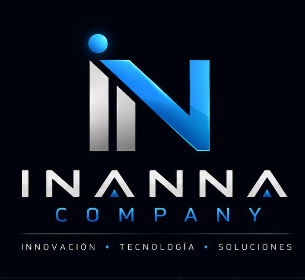

Soluciones Integrales de Grado Industrial, Mantenimiento Predictivo y Robótica Avanzada
Liderada por el Técnico Superior en Mecatrónica Fabio Maximiliano Medina Rojas, INANNA COMPANY diseña, fabrica e integra sistemas SCADA, telemetría industrial sin router (ESP-NOW AES-128), lazos de instrumentación 4–20 mA (Norma NAMUR NE43), tableros Modbus RTU/TCP y plataformas robóticas cognitivas listas para planta y campo.
Instrumentación 4–20 mA, diagnóstico Cero Vivo NAMUR NE43, tableros PLC/Modbus RTU/TCP y lazos cerrados VFD.
Desarrollo del robot humanoide Inanna V2, cinemática SCARA, servocontrol mecatrónico y actuación autónoma.
Redes neuronales locales, visión artificial, fusión sensorial satelital-terrestre y mantenimiento predictivo.
Gabinetes estancos IP67, módulos en riel DIN, monitoreo ISO 10816 de motores, bombas, silos y cadena de frío.
Mantenimiento Preventivo, Predictivo (CBM), Correctivo y Proactivo con horómetros en memoria no volátil NVS.
I+D en comunicaciones industriales P2P, adquisición analógica ADS1115 de 16 bits y prototipado embebido.
Diseño electrónico PCB, modelado CAD/3D mecánico, ergonomía HMI SCADA e identidad industrial.
Bancos didácticos STEM, capacitación técnica en mecatrónica e Industria 4.0 para escuelas e instituciones.
Provisión de transmisores industriales 4–20 mA, shunts de precisión 0.1%, aisladores RS485 y energía solar.
Ingeniería llave en mano para plantas industriales, cooperativas agropecuarias e infraestructura hídrica.
Domótica avanzada con Home Assistant, gestión energética sustentable y seguridad electrónica.
Estación Rural Plug & Play IIoT
Gateway local ESP32 con Wi-Fi propio + 2 Nodos Solares IP67 ESP-NOW + Sondas 24V DC 4–20 mA con protección anti-inundación NAMUR NE43. Cero abono mensual.
Suite SCADA Industrial Multi-Nodo
Monitoreo continuo de bombas centrífugas, compresores, vibración ISO 10816, silos y cámaras frigoríficas PT100 con salida directa Modbus TCP:502 y RS485 aislado.
Banco Entrenador ACADEMY INANNA
Tablero didáctico transparente con resistencia shunt Kirchhoff 165 Ω (0.1%), llaves simuladoras de falla de cable/corto y manuales técnicos completos.
Fabio Maximiliano Medina Rojas
Especialista en automatización industrial, instrumentación de procesos 4–20 mA, redes embebidas ESP-NOW/Modbus, mantenimiento predictivo (CBM) y desarrollo integral del robot humanoide cognitivo Inanna V2.